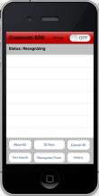

Open topic with navigation
Building and Running the Sample Applications
To run either of the sample applications:
- Unpack the Gracenote iOS GNSDK for Mobile Package: GN_Music_SDK_<version>.zip
- Launch Xcode.
- Close the Welcome to Xcode launch screen.
- Choose File > Open.
- Navigate to GN_Music_SDK_iOS.
- To run the sample application, add the ClientID and Client Tag strings provided by Gracenote to the project.
- For GN_Music_SDK_iOS, edit the file GN_Music_SDK_iOS-Prefix.pch file under Other Sources.
// For GN_Music_SDK_iOS, edit GN_Music_SDK_iOS-Prefix.pch
#define CLIENTID @"12345678"
#define CLIENTIDTAG @"ABCDEFGHIJKLMNOPQRSTUVWXYZ012345"
- Add the Gracenote license file to the Xcode project.
- Select the Overview drop down box at the top left corner of the application window.
- In the first grouping, select Simulator.
- Leave all other settings as is and click outside of the drop down box to exit it.
- In the top middle of the window, click the Build and Run icon.
- Look for Succeeded in the the bottom right of the window. If the build fails, see Troubleshooting.
- The Simulator will open and the Gracenote iOS Sample Application will launch.
Testing the Sample Applications
To test the GN_Music_SDK_iOS sample application:
- Tap on the buttons to perform the available queries. When testing the application, note that:
- The Recognize From > FPX and Recognize From > PCM queries use inputs from the GN_Music_SDK_iOS parent directory.
- The Text Search and Lyric Fragment Search queries require you to manually input search terms.
- Tap the ID Now button on the device to identify a song. You should see a screen similar to the following:

In the Sample Application, if debugging is enabled through the UI, logging will take place for everything except idNow operations. However, you will not see this issue if you enable debugging programmatically, See Using GNSDK for Mobile Debug Logging in the GNSDK for Mobile iOS Implementation Guide for more information.
How can we improve this documentation?